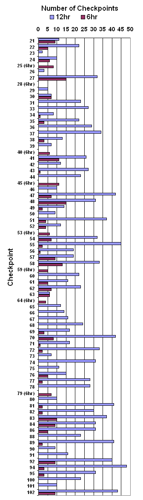

| Number |
Clue |
12hr |
6hr |
|
| 21 |
A eucalyptus block, N side |
11 |
9 |
| 22 |
A poplar tree |
22 |
5 |
| 23 |
A spur between river and road |
2 |
0 |
| 24 |
The stream junction |
10 |
6 |
| 25 (6hr) |
A poplar |
|
8 |
| 26 |
A shelter belt, W end |
3 |
0 |
| 27 |
A rock outcrop, N side |
32 |
15 |
| 28 (6hr) |
Foot of a rocky bluff |
0 |
0 |
| 29 |
A scrub patch S of bend |
5 |
0 |
| 30 |
The pond, S branch |
7 |
7 |
| 31 |
Above a small waterfall |
23 |
0 |
| 33 |
A tree in stream |
27 |
0 |
| 34 |
A track crosses creek |
8 |
1 |
| 35 |
A cabbage tree |
22 |
3 |
| 36 |
The saddle, SE side |
29 |
0 |
| 37 |
A small cabbage tree |
34 |
0 |
| 38 |
A tree |
13 |
3 |
| 39 |
A forest block, SE corner |
7 |
0 |
| 40 (6hr) |
The yards |
|
6 |
| 41 |
The rock, NE side |
26 |
11 |
| 42 |
A rocky knoll |
12 |
0 |
| 43 |
A tiny knoll on spur, E side |
27 |
1 |
| 44 |
A saddle |
23 |
0 |
| 45 (6hr) |
A cabbage tree |
|
11 |
| 46 |
The fence bend |
10 |
0 |
| 47 |
A stream/fence junction |
42 |
7 |
| 48 |
The fence/stream junction |
31 |
15 |
| 49 |
Top of a small gully |
14 |
2 |
| 50 |
The stream junction |
9 |
0 |
| 51 |
The gully |
37 |
4 |
| 52 |
The fence intersection |
12 |
4 |
| 53 (6hr) |
A spur, top of |
|
6 |
| 54 |
The spur |
32 |
7 |
| 55 |
Beside the hut |
45 |
2 |
| 56 |
Western of 2 rock outcrops, 50m apart |
19 |
1 |
| 57 |
A rocky knoll, N side |
19 |
9 |
| 58 |
Fence on spur |
33 |
13 |
| 59 (6hr) |
A pond, N side |
|
5 |
| 60 |
A pointed knoll, S side |
22 |
0 |
| 61 |
The saddle, S side |
16 |
5 |
| 62 |
A willow tree |
23 |
7 |
| 63 |
A kowhai tree |
6 |
6 |
| 64 (6hr) |
A sm saddle, W end |
|
4 |
| 65 |
A cabbage tree |
12 |
0 |
| 66 |
A rock |
14 |
0 |
| 67 |
SSE of knoll |
16 |
0 |
| 68 |
Airstrip, SW end |
24 |
0 |
| 69 |
Eastward spur |
17 |
3 |
| 70 |
A small gully, S facing |
42 |
8 |
| 71 |
A rock |
17 |
1 |
| 72 |
A Kowhai tree |
33 |
2 |
| 73 |
A Kowhai tree |
7 |
0 |
| 74 |
A rocky knoll |
31 |
0 |
| 75 |
Top of small gully |
11 |
0 |
| 76 |
Eastern willow tree |
15 |
5 |
| 77 |
A clearing |
28 |
2 |
| 78 |
Copse in stream bed |
28 |
0 |
| 79 (6hr) |
A gully |
|
7 |
| 80 |
A knoll |
10 |
0 |
| 81 |
Top of a conical knoll |
41 |
2 |
| 82 |
A tree |
30 |
2 |
| 83 |
A junction |
37 |
10 |
| 84 |
A gate |
31 |
9 |
| 86 |
A rock |
31 |
5 |
| 88 |
Fence crosses spur |
23 |
0 |
| 89 |
A tree |
41 |
2 |
| 90 |
A limestone bluff, W side |
9 |
0 |
| 91 |
The knoll |
16 |
0 |
| 92 |
A rocky knoll, N side |
40 |
9 |
| 94 |
The track bend, inside" |
48 |
3 |
| 95 |
A saddle, S end |
31 |
3 |
| 100 |
Hilltop |
23 |
0 |
| 101 |
A solitary rock (2m x 2m) |
10 |
0 |
| 102 |
A sm knob on spur, NE end |
43 |
9 |
| |
|
|
|
|
 |